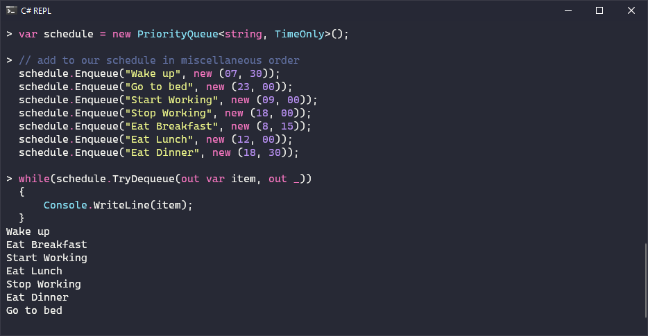
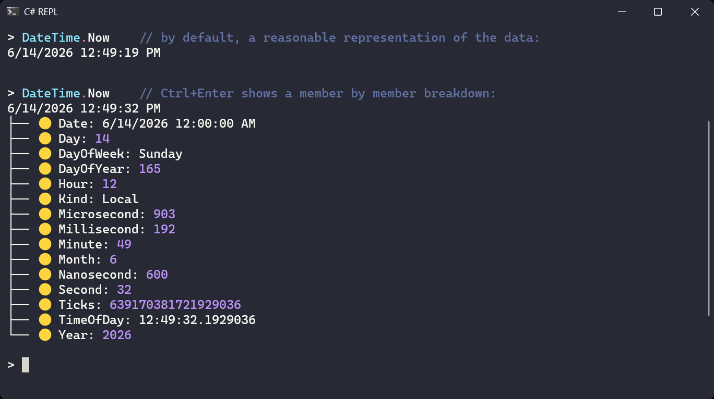
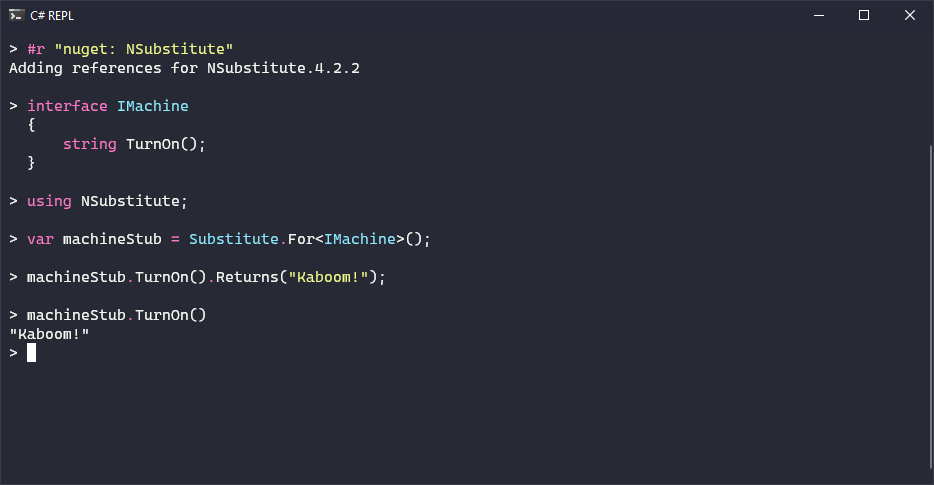
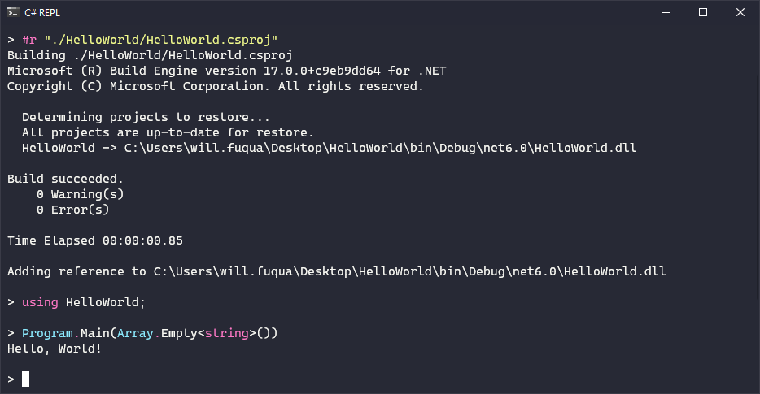
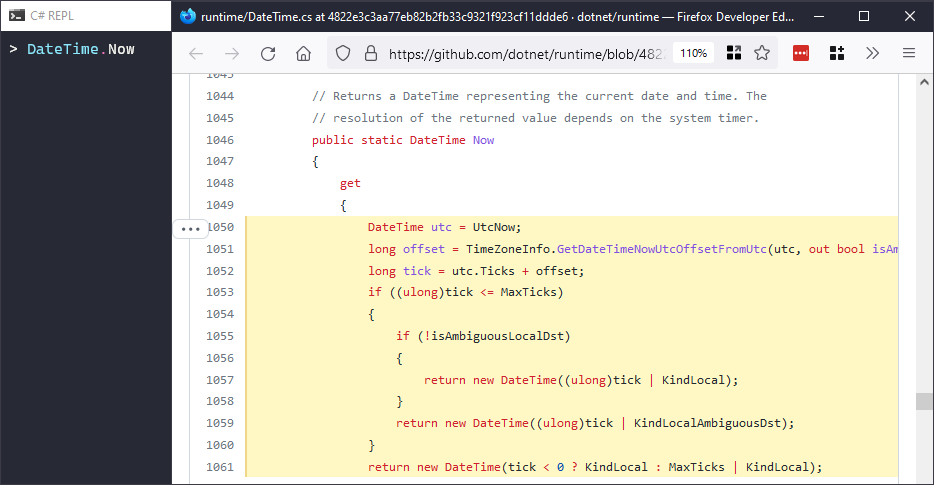
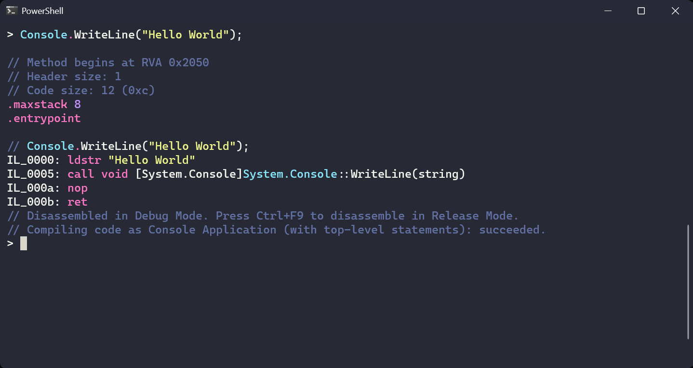
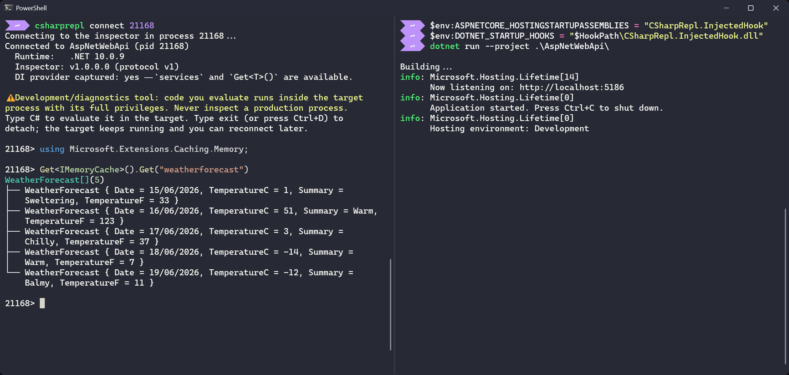

A free & open source .NET global tool
Prototype code, probe libraries, and see what the compiler does under-the-hood, without leaving the terminal.
// prototype
Run C# and see the result immediately; no scratch console projects needed. Command-line autocomplete with inline documentation keeps the reference at your fingertips.

Ctrl+Enter
Results are formatted with syntax highlighting and Spectre.Console rendering. Press Ctrl+Enter on any line for a detailed, member-by-member view of the object.

#r "nuget: …"
Reference a package with the #r directive and start using it on the next line. The completion window shows documentation for the package's methods and types.

#r "App.csproj"
The same #r directive takes assemblies, .csproj projects, and .sln / .slnx solutions. Load your project, then call straight into it.

F12
Googling for a library's implementation? Press F12 instead on any symbol to open its original source in the browser, for every assembly that supports Source Link.

F9 · F8
Press F9 for the IL of any statement, or F8 for the lowered C#. Explore async state machines, lambda closures, and foreach / using expansions made explicit. Hold Ctrl to see Release-mode optimizations. Powered by ILSpy.

csharprepl inspect <pid>
Beyond its own process, csharprepl can attach to another .NET 10 app and evaluate C# inside it, reading and writing live statics and DI-resolved services, with the same interactivity as the normal REPL.
A real Roslyn engine is injected via the .NET runtime's startup-hook support; the target opts in by setting a few environment variables. Development and diagnostics only! Never enable the inspector on a production process.

// keyboard reference
Editing and navigation mirror Visual Studio, so the keyboard shortcuts feel natural.
$ get started
Requires the .NET 10 SDK. Runs on Windows, macOS, and Linux.
Update later with dotnet tool update -g csharprepl